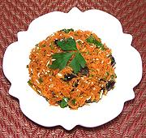

|
Carrot SaladFrance - Carottes Râpées | ||||
| Serves: Effort: Sched: DoAhead: |
5 salad ** 20 min Yes |
A tasty way to get your recommended daily dosage of carrots, with a good dosage of Vitamin A. | |||
|
1 14 3 2 1/4 1/3 1/4 2 |
oz T oz c t t T |
Egg Carrots (1) Lemon Juice Black Olives (2) Olive Oil, ExtV Salt Pepper Parsley |
Make - (20 min)
|